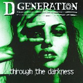

With melodies and energy that combines the best of both the alternative and punk genres respectively, D Generation is a band that receives far too little recognition. This sophomore album is smoother than the debut, as singer Jesse Malin's Billy-Corgan-esque voice wails from the opening "Helpless", featured on the Faculty's soundtrack, to the allusion-filled "Rise and Fall", to the anguished "Lonely". The lovely "Violent Love" is included as a hidden track, and reveals the band's slower-paced emotional side. Amazing.
Highlights:
"Helpless", "Violent Love" (hidden)